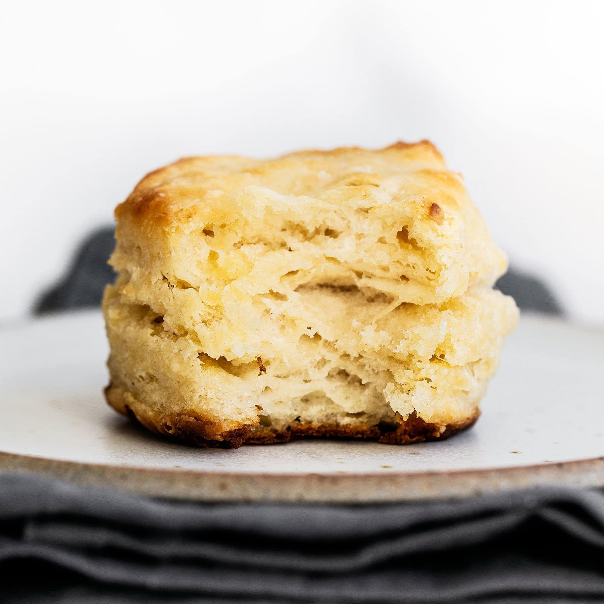

Buttermilk Biscuit

Here is the recipe for a tall, flaky, and tender buttermlk biscuit.
It has the perfect texture and is perfect for dinner. It will go along
well with other dishes such as mashed potatoes and gravy.
Ingredients
- 2 cups all purpose flour plus more for dusting
- 2 teaspoons granulated sugar
- 1 tablespoon baking powder
- 1/4 teaspoon baking soda
- 1 teasppon fine salt
- 6 tablespoons cold, unsalted butter, cut into small cubes
- 1 cup buttermilk, chilled
Steps
- in a large bowl, combine all dry ingredients
- using fingertips, combine bitter into dry mixture until it is a coarse meal
- stir in buttermilk
- turn dough onto floured surface and dust the dough as well
- pat down dough into 1/2 inch thick rectangle
- fold dough into thirds, rotating 90 degrees between each fold
- pat the dough into a final 1 inch thick rectangle
- use something circular to cut out the biscuits
- freeze uncooked dough while oven preheats to 400 degrees
- bake the biscuits for 12-15 minutes until golden brown
- serve while hot